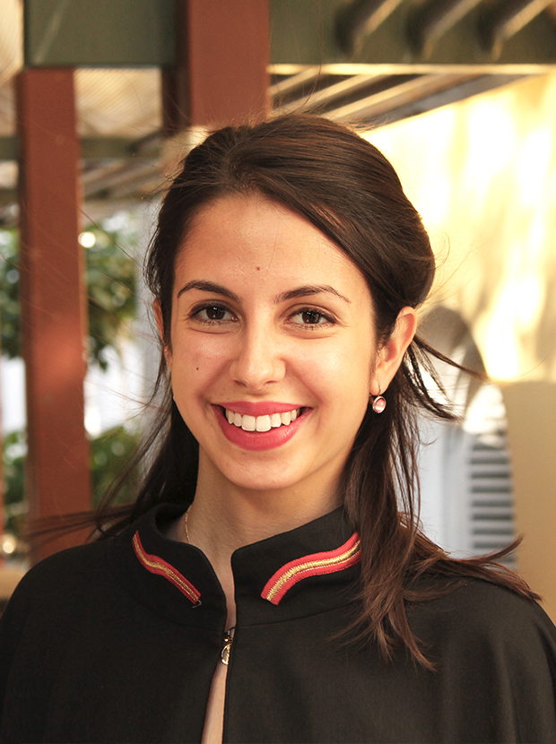
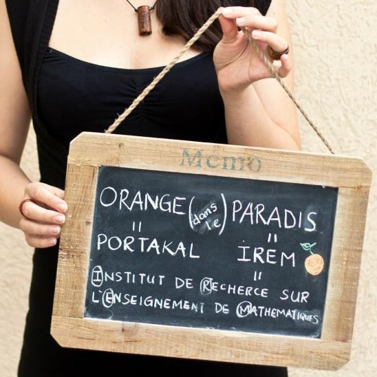
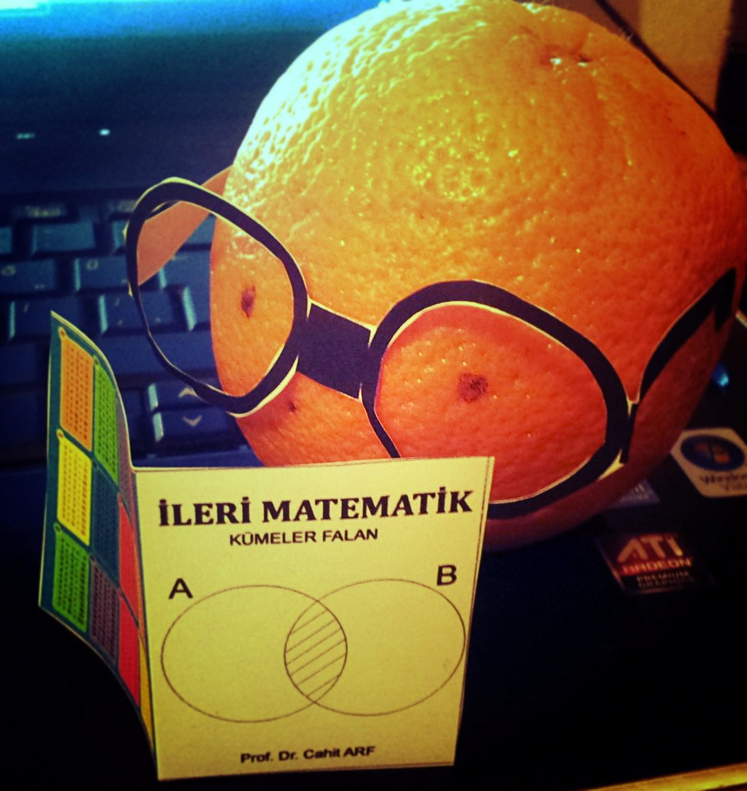

''İ'' is the uppercase of "i" in Turkish. It is pronanciated for example as the german letter "i".

I am a postdoc in Nonlinear Algebra Research Group of Bernd Sturmfels at the Max Planck Institute Leipzig.
Before that I was a postdoc researcher in the
Discrete, Convex and Toric Geometry research group
of Benjamin Nill at Otto-von-Guericke-Universität Magdeburg. I defended my thesis in April 2018 at Freie Universität Berlin.
I was a PHD Student in Berlin Mathematical School and in the Algebraic Geometry Group of Klaus Altmann.
Before, I was a master student at École Normale Supérieure in Lyon and an undergraduate student at Galatasaray University in Istanbul, Turkey.
Some key words for my research: Deformation, rigidity, toric, T-varieties, edge cones, edge polytopes, lattice polytopes,
rational maximum likelihood estimators, rational linear precision, Horn matrix, matrix Schubert varieties, Kazhdan-Lusztig varieties.
